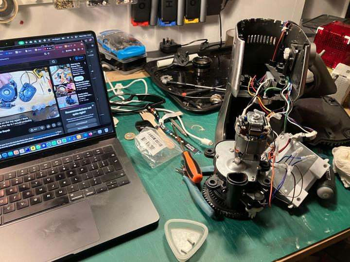
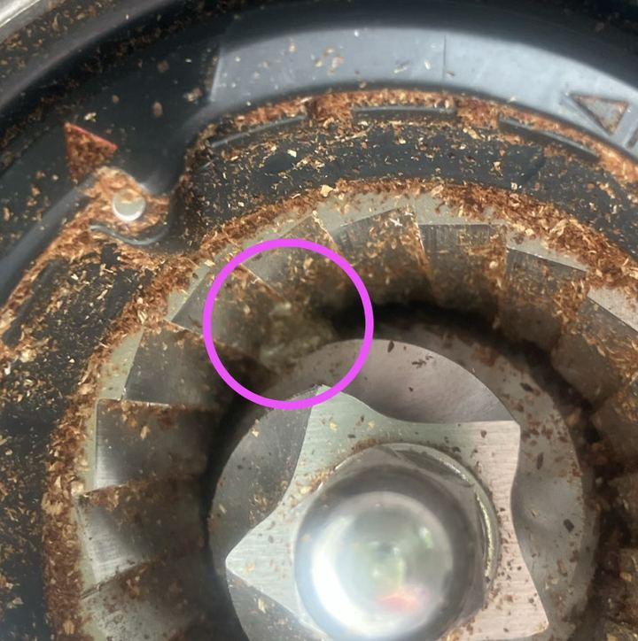

Right for repair
and how the web was there for me

I don’t know about you - but coffee is more than a hot drink. It’s more than caffeine. It is more than the sum of its many parts. I’ve always liked coffee (and to be fair tea too), but coffee caught me in my twenties. It was through my first graduate job at Cambridge in the mid nineties when coffee really became a part of me. It’s when the French press shifted to a first stove-top and a filter machine. Frequent travel to the US and my first real taste of having to work through jetlag (coming back so hard) that I realised that it gave me not the caffeine, but the routine. 30 years later and I’m living in Berlin, working with Mozilla, prof grade espresso and grinder right there. The filter becoming a V60. The robusta/arabica choice becomes one about the origin, the roasting, washed or natural - I was baptised into the third wave and was born again! STOP. I could right now ramble on, but this isn’t a post about my addictions! Perhaps I need to register another website for that one all by itself… this is a post about repairing. I just wanted to set the scene. Coffee matters to me.
It’s why, after a life event, where I needed to spend significantly more time at home, that I decided it was time to upgrade my stove-top, aeropress and V60, to match (in a home-kitchen way) the set up of Berlin in what became another life. Espresso machine and burr grinder. A very nice pre subscription. Living the dream.
But then two things happened. A tiny sensor (to sense the heat of the milk in a pointless milk-frothing thing) in my espresso machine went. A £10 part (a thermistor - heat variable resistor) that disables a £400 machine. And then separately (a year or so later). A stone in my £200 grinder that destroyed the (£10) nylon gear inside.
STONE!

It was one of the price margins that drove me to repair.
This is where the web came to my rescue
Step 1 search: I use the Brave search engine (if you’ve not switched from Google - do it now!) to find the parts I needed.
Step 2 video: YouTube came up great. But Heilige Merkel the number of videos about hair loss, reading glasses, rain bells (rain bells - I do not need to know it’s raining in Scotland!).
Step 3 3D printed parts: OK, so I have a 3D printer but I’m not set up for nylon yet and I’m not convinced my Prusa would have given me the detailing I need… but luckily the gear-part came readily available online.
Step 4 Online payments: Paying online for the parts I needed makes the web-shop work. But yet again I had to dig into that dirty world of online payments. Apple Pay (just look at what Cory Doctorow says about this) takes 30% cut. PayPal = Peter Thiel (no more to say). The open source Shopify (well known to host far-right content).
Leaving us with a mixed picture of how, on the one hand, the web came to my rescue to help me repair my coffee machine and grinder. But on the other, I had to use dirty tech like YouTube and online payments. It’s hard to find clean and honest tech out there. Especially when it comes to money.
There is work to do! We can’t separate The Right To Repair of things from the need to repair the broken web.
So ok, I had to use some dirty tech to get things done. But at least you got your stuff working, I hear you say.
NOT SO FAST!
Search (Brave) tick
Parts (3D printed) tick
Knowledge (YouTube) tick
Payment of part (Apple Pay) tick.
But then I had to get the parts open and do the work. And wow. Things might be made “to” repair but they are not made “for” repair. I had to buy a whole new set of extra-long screwdrivers just to reach deep into the recesses where the screws were buried. I had to snip so many cable ties that were bunching up wires. I had to tease so many tiny fragile wires wound tightly around “replaceable” modules (rendering them un-replaceable). And yes, I have a small collection of washers and screws left over - as there were so many and all different sizes and nothing standardised.
Result - I have a working coffee machine and a working grinder (and a kg of coffee being posted to me by my very lovely coffee providers by way of sorry for the stone). I know more than I did before about coffee machines and grinders.
And I know that we have a long way to go to have the kind of right for repair that is needed for everyone to do what I've just done.
For further reading dig into Cory Doctorow’s Pluralistic and the Restart Project - who are calling out the UK government’s problematic right to repair policies.